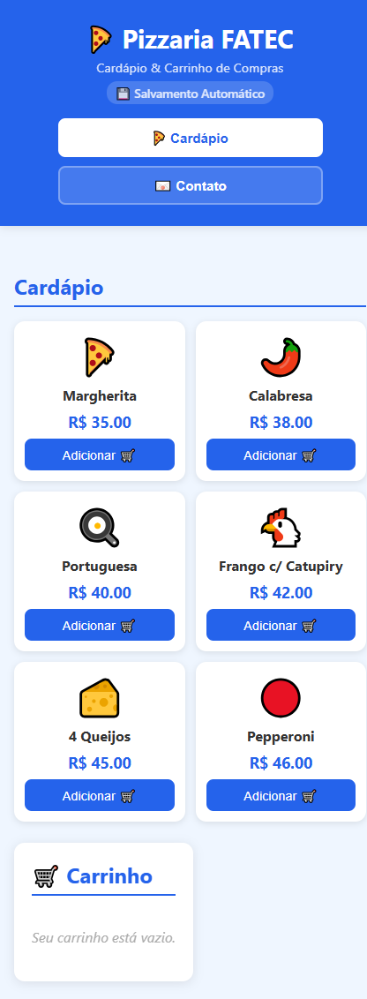
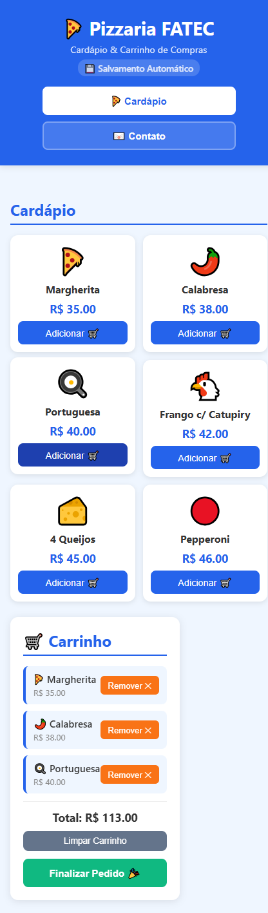
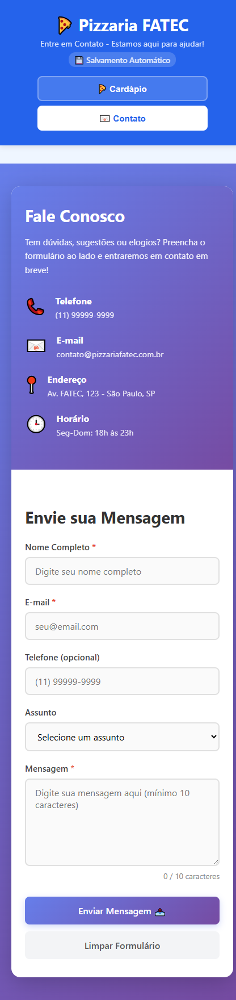
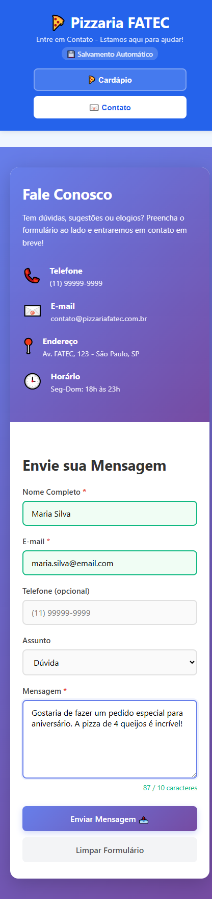

Documentação Técnica do Projeto
O projeto Pizzaria FATEC é uma aplicação web desenvolvida com React 18 + Vite como evolução dos exercícios anteriores em JavaScript puro (pastas JS3 e JS4). A aplicação reúne duas funcionalidades principais em uma Single Page Application (SPA) com navegação por estado:
Listagem de pizzas com preços. Adicione ao carrinho, visualize o total e finalize o pedido.
O carrinho é salvo automaticamente no localStorage, mantendo os itens ao recarregar a página.
Formulário com validação em tempo real dos campos nome, e-mail e mensagem.
Layout adaptado para desktop e dispositivos móveis com breakpoints em 768px e 480px.
| Ferramenta | Versão Mínima | Observação |
|---|---|---|
| Node.js | 18.x ou superior | Obrigatório. Disponível em nodejs.org |
| npm | 9.x ou superior | Incluído com o Node.js |
| Vite | 8.x | Instalado via npm install |
| React | 18.x | Instalado via npm install |
| Navegador | Qualquer moderno | Chrome, Edge, Firefox, Safari |
git clone https://github.com/seu-usuario/Frontend-Fatec.git
cd caminho/para/Frontend-Fatec/JS5
npm install
Isso cria a pasta node_modules/. Execute apenas uma vez (ou quando houver mudanças no package.json).
Em sistemas Linux/Mac ou CMD:
npm run dev
Em Windows PowerShell (se houver erro de política de execução):
node node_modules/vite/bin/vite.js
http://localhost:5173/
A porta padrão é 5173. Se já estiver em uso, o Vite usará automaticamente a próxima disponível (5174, 5175, etc.).
Ctrl + C
Para gerar os arquivos otimizados para produção:
npm run build
Os arquivos serão gerados na pasta dist/. Para visualizá-los localmente:
npm run preview
Exibe o cardápio com as 6 pizzas disponíveis e o carrinho ainda sem itens.

Após adicionar pizzas: o carrinho exibe os itens, total e botões de ação.

Página de contato com campos nome, e-mail, assunto e mensagem.

Formulário com campos validados em tempo real mostrando estados de sucesso.

| Tecnologia | Uso no Projeto |
|---|---|
| React 18 | Componentização, hooks (useState, useEffect), renderização condicional |
| Vite 8 | Bundler e servidor de desenvolvimento com hot-reload |
| CSS Modules (manual) | Arquivos .css por componente para isolamento de estilos |
| localStorage | Persistência do carrinho entre recarregamentos da página |
| HTML5 / JSX | Marcação semântica com componentes React funcionais |
| ESLint | Linting e padronização do código JavaScript/JSX |